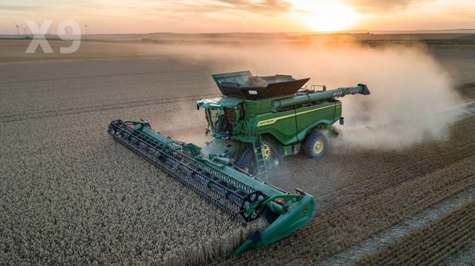
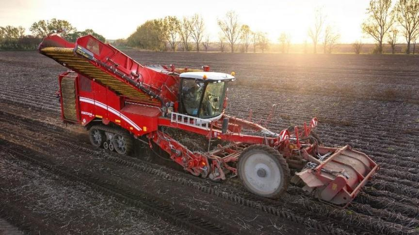
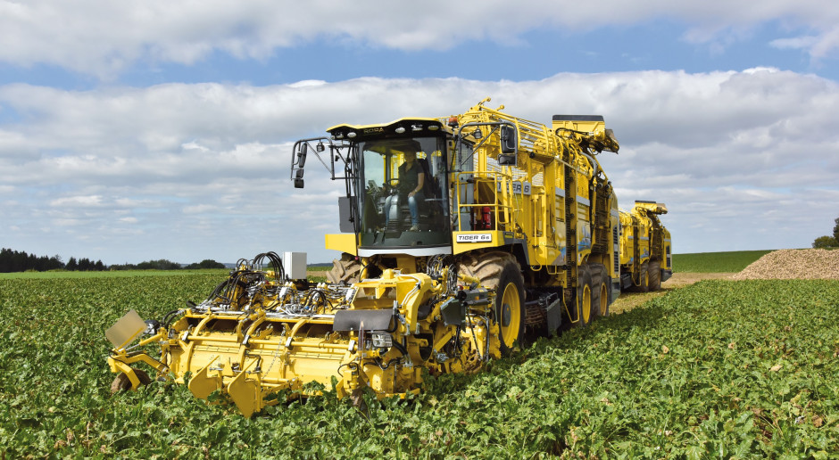
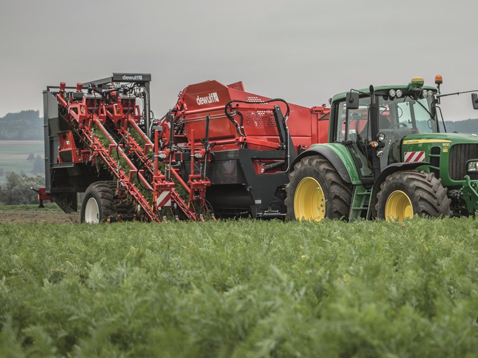

| Kombajny zbożowe | Ich praca polega na koszeniu i młóceniu. Wykonują te same zadania, które dawniej należały do kosiarek, żniwiarzy i żniwiarek oraz młocarni. Kombajn zbożowy można wykorzystać do zbioru m.in. pszenicy, jęczmienia, żyta, owsa czy pszenżyta, a po modyfikacji także do zbioru rzepaku, kukurydzy, słonecznika czy roślin motylkowych: grochu, łubinu itp. |  |
| Kombajny ziemniaczane | Wykopuje bulwy z redlin i oddziela je od łętów, kamieni i innych zanieczyszczeń. Ten rodzaj kombajnu rolniczego dzieli się na kilka typów pojazdów, które różnią się szerokością roboczą, sposobem postępowania z bulwami oraz sposobem jazdy |  |
| Kombajny buraczane | Ogławiają buraki z liści rozdrabniając je, a także wykopują korzenie oczyszczając je i gromadzą korzenie w zasobniku. Co więcej, takie nowoczesne maszyny rolnicze dzięki innowacyjnym układom bieżnym chronią glebę przed ugnieceniem. |  |
| Kombajny do zbioru roślin sadowniczych i warzyw | Takie maszyny rolnicze specjalizują się w zbiorach malin, porzeczek, agrestu, borówki, ogórków, cebuli, marchwi i kapusty. Zdarza się, że producenci tworzą osobne pojazdy umożliwiające automatyczny zbiór także wiśni oraz jabłek. |  |